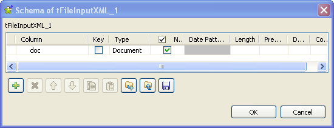
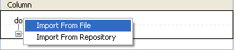
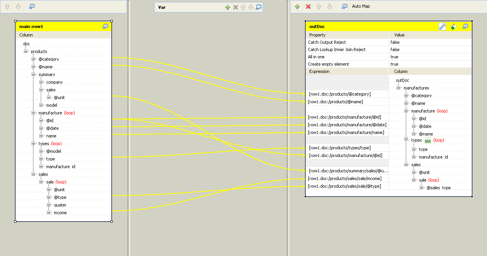
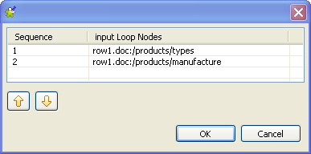

|
Component family |
Processing/XML | |
|
Function |
tXMLMap is an advanced component fine-tuned for transforming and routing XML data flow (data of the Document type), especially when processing numerous XML data sources, with or without joining flat data. | |
|
Purpose |
tXMLMap transforms and routes data from single or multiple sources to single or multiple destinations. | |
|
Basic settings |
Map editor |
It allows you to define the tXMLMap routing and transformation properties. |
|
Advanced settings |
tStatCatcher Statistics |
Select this check box to gather the Job processing metadata at the Job level as well as at each component level. |
|
Usage |
Possible uses are from a simple reorganization of fields to the most complex jobs of data multiplexing or demultiplexing transformation, concatenation, inversion, filtering and so on. When needs be, you can define sophisticated outputting strategy for the output XML flows using group element, aggregate element, empty element and many other features such as All in one. For further information about these features, see Talend Open Studio User Guide. It is used as an intermediate component and fits perfectly the process requiring many XML data sources, such as, the ESB request-response processes. | |
|
Limitation |
The limitations to be kept in mind are: - The use of this component supposes minimum Java and XML knowledge in order to fully exploit its functionalities. - This component is a junction step, and for this reason cannot be a start nor end component in the Job. - At least one loop element is required for each XML data flow involved. | |
The following sections present several generic use cases about how to use the tXMLMap component, while if you need some specific examples using this component along with the ESB components to build data services, see the user guide for the Talend ESB Studio.
If you need further information about the principles of mapping multiple input and output flows, see Talend Open Studio User Guide.
In this scenario, a three-component Job is run to map and transform data from one XML source, customer.xml and generate a XML output flow which could be reused for various purposes in the future, such as, for a ESB request.
These three components are:
tFileInputXML: this component is used to provide input data to tXMLMap.
tXMLMap: this component maps and transforms the received XML data flows into one single XML data flow.
tLogRow: this component is used to display the output data.

To replicate this scenario, proceed as the following sections illustrate.
To do this, proceed as follows:
From the Palette, drop tFileInputXML, tXMLMap and tLogRow into the Design workspace.
Note
A component used in the workspace can be labelled the way you need. In this scenario, this input component is labelled Customers for tFileInputXML. For further information about how label a component, see Talend Open Studio User Guide
Double click the tFileInputXML component labelled Customers to open its contextual menu.
From this menu, select Row > Main link to connect this component to tXMLMap..
Repeat this operation to connect tXMLMap to tLogRow using Row > *New output* (Main) link. A dialog box pops up to prompt you to name this output link. In this scenario, name it as Customer_States.

Then you can continue to configure each component.
To do this, proceed as follows:
Double-click the tFileInputXML component labelled Customers to display its Basic settings view.

Next to Edit schema, click the three-dot button to open the schema editor.

In the schema editor, click the plus button to add one row.
In the Column column, type in a new name for this row. In this scenario, it is Customer.
In the Type column, select the data type of this row. In this scenario, it is Document. The document data type is essential for making full use of tXMLMap. For further information about this data type, see Talend Open Studio User Guide.
Click OK to validate this editing and accept the propagation prompted by the popup dialog box. One row is added automatically to the Mapping table.
In the File name / Stream field, browse to, or type in the path to the XML source that provides the customer data.
In the Loop XPath query field, type in
“/”to replace the default one. This means the source data is queried from the root.In the XPath query column of the Mapping table, type in the XPath. In this scenario, type in
“.”, meaning that all of the data from source are queried.In the Get Nodes column of the Mapping table, select the check box.
Note
In order to build the Document type data flow, it is necessary to get the nodes from this component.
To do this, proceed as follows:
Double-click the tXMLMap component to open the Map Editor.
Note that the input area is already filled with the defined input tables and that the top table is the main input table.
In the left table, right-click Customer to open the contextual menu.

From this contextual menu, select Import From File and in the pop-up dialog box, browse to the corresponding source file in order to import therefrom the XML structure used by the data to be received by tXMLMap. In this scenario, the source file is Customer.xml, which is the data input to tFileInputXML (Customers).
Note
You can also import an XML tree from an XSD file. When importing either an input or an output XML tree structure from an XSD file, you can choose an element as the root of your XML tree. For more information on importing an XML tree from an XSD file, see Talend Open Studio User Guide.
In the imported XML tree, right click the Customer node and select As loop element to set it as the loop element.

On the lower part of this map editor, click the schema editor tab to display the corresponding view.
On the right side of this view, click the plus button to add one row to the Customer table and rename this row as Customer_States.

In the Type column of this Customer_States row, select Document as the data type. The corresponding XML root is added automatically to the top table on the right side which represents the output flow.

On the right side in the top table labelled Customer_States, import the XML data structure that you need to use from the corresponding XML source file. In this scenario, it is Customer_State.xml.

Right click the customer node and select As loop element from the contextual menu.
Then you can begin to map the input flow to the output flow.
In the top table on the input side (left) of the map editor, click the id node and drop it to the Expression column in the row corresponding to the output row you need map. In this scenario, it is the @id node.

Do the same to map CustomerName to CustomerName, CustomerAddress to CustomerAddress and idState to idState from the left side to the right side.
Note
In the real project, you may have to keep empty elements in your output XML tree. If so, you can use tXMLMap to manage them. For further information about how to manage empty elements using tXMLMap, see Talend Open Studio User Guide.
If required to generate single XML flow, click the wrench icon on top of the output side to open the setting panel and set the All in one feature as true. In this example, this option is set as true. For further information about the All in one feature, see Talend Open Studio User Guide.

Click OK to validate the mappings and close the Map Editor.
Note
If you close the Map Editor without having set the required loop elements as described earlier in this scenario, the root element will be automatically set as loop element.
Then you can run this Job.

Based on the previous scenario, this scenario shows how to use lookup in an XML flow to join the data of interest to a given XML flow. The XML data for lookup is held in the USstates.xml file.
To do this, a tFileInputXML component is added to the previous Job in order to load and send the complementary data to tXMLMap. Thus this Job looks like as follows:

To replicate this scenario, proceed as the following sections illustrate.
To do this, proceed as follows:
From the Palette, drop tFileInputXML into the Design workspace.
Note
A component used in the workspace can be labelled the way you need. In this scenario, the newly added tFileInputXML is labelled USstates. For further information about how to label a component, see Talend Open Studio User Guide
Double click the tFileInputXML component labelled USstates to open its contextual menu and select Row > Main connection to connect this component to tXMLMap. As you create this connection in the second place, this connection is of type Lookup.
Double click the tFileInputXML component labelled USstates to open its Component view.

Next to Edit schema, click the three-dot buttons to open the schema editor.
Click the plus button to add one rows and rename it, for example, as USState.
In the Type column, select the Document option from the drop-down list.

Click OK to validate this editing and accept the propagation prompted by the pop-up dialog box.
In the File name/Stream field, browse to or type in the path to the USStates.xml file.
Note
The input schemas could be stored in the Metadata node of the Repository tree view for easy retrieval. For further information regarding metadata creation in the Repository, see Talend Open Studio User Guide.
In the Loop XPath query field, type in
"/"to replace the default value. This means the loop is based on the root.In the Mapping table, where one row is already added automatically, enter
"."in the XPath query column to retrieve US States data from the source file.In the Get Nodes column, select the check box. This retrieves the XML structure for the Document type data.
To do this, proceed as follows
Double-click the tXMLMap component to open the Map Editor.
Note that the input area is already filled with the defined input tables and that the top table is the main input table.
In the top table, click the idState node and drop it, in the lower table, to the Exp.key column in the row corresponding to the idState row. This creates a join between the two tables on the idState data, among which the idState node from the main flow provides the lookup key.

Then you can begin to modify the mapping you have done in the previous scenario to join the complementary data into the input flow. This mapping then should look like as follows:

In the lookup table on the input side (left) of the map editor, click the LabelState row and drop it on the customer node on the output side. A dialog box pops up.

In this dialog box, select Create as sub-element of target node and click OK. This operation adds a new sub-element to the output XML tree and maps it with LabelState on the input inside at the same time.
If required to generate single XML flow, click the wrench icon on top of the output side to open the setting panel and set the All in one feature as true. In this example, this option is set as true. For further information about the All in one feature, see Talend Open Studio User Guide.
Click OK to validate the mappings and close the Map Editor.
Press F6 to run this Job.
The Run view presents the execution result which may read as follows:

The US state labels that correspond to the state IDs provided as the lookup key by the main data flow are selected and outputted.
A step-by-step tutorial related to this Join topic is available on the Talend Technical Community Site. For further information, see http://talendforge.org/tutorials/tutorial.php?language=english&idTuto=101.
Based on the section called “Scenario 2: Launching a lookup in a second XML flow to join complementary data”, this scenario presents how to apply filter condition(s) to select the data of interest using tXMLMap.
For example, you need to select the customer data where the state id is 9.
To replicate this scenario, proceed as follows:
In your Studio, open the Job used in the previous scenario to display it in the Design workspace.
Double click tXMLMap to open its editor. In this editor, the input and output data flows have been mapped since the replication of the previous scenario.
On the output side (right), click the
 button to open the filter area.
button to open the filter area.
In this filter area, drop the idState node from the tree view of the input data flow. The Xpath of idState is added automatically to this filter area.
Still in this area, write down the filter condition of interest in Java. In this scenario, this condition reads:
"9".equals([row1.Customer:/Customers/Customer/Address/idState])If required to generate single XML flow, click the wrench icon on top of the output side to open the setting panel and set the All in one feature as true. In this example, this option is set as true. For further information about the All in one feature, see Talend Open Studio User Guide.
Click OK to validate this editing and close this editor.
Press F6 to run this Job.
The execution result is displayed in the Run view as follows:

The result says that the customer Pivot Point College is selected as its state ID is 9, representing the Florida state in this scenario.
The data rejected by the lookup and filter conditions you set in tXMLMap can be caught and outputted by this component itself.
Based on the section called “Scenario 3: Mapping data using a filter”, this scenario presents how to catch the data rejected by the lookup and the filter set up in the previous sections.
In this scenario, another tLogRow component is added to the Job used in the previous scenario and thus the Job displays as follows:

To replicate this scenario, proceed as follows:
In your Studio, open the Job used in the previous scenario to display it in the Design workspace.
From the Palette, drop the tLogRow component on the workspace.
Right-click tXMLMap to open its contextual menu and select Row > *New Output* (Main) to connect this component to the newly added tLogRow component. A dialog box pops up to prompt you to name this output link. In this scenario, name it as Reject.

Click OK to validate this creation.
Double click the tXMLMap component to open its editor. An empty Reject table has been added to the output side to represent the output data flow carrying the rejected data. You need to complete this table to make this editor look like as follows:

Select this empty Reject table.
In the lower part of this editor, click the Schema editor tab to open the corresponding view.
On the right part of this Schema editor view, click the plus button to add the rows you need to use. In this scenario, click four times to add four rows to the Reject table.

In the Reject table presented on the right part of this Schema editor view, rename each of the four newly added rows. They are: ID, Customer, idState, LabelState.
Note
In this scenario, the Reject output flow uses flat data type. However, you can create an XML tree view for this flow using the Document data type. For further information about how to use this Document type, see the section called “Scenario 1: Mapping and transforming XML data”.
The Reject table is completed and thus you have defined the schema of the output flow used to carry the captured rejected data. Then you need to set up the condition(s) to catch the rejected data of interest.
On the upper part of the output side in this Map editor, select the Reject table.
At the top of this table, click the
 button to open the setting area.
button to open the setting area.
In the Catch Output Reject row of the setting area, select true from the drop-down list. Thus tXMLMap outputs the data rejected by the filter set up in the previous scenario for the Customer output flow.
Do the same thing to switch the Catch Lookup Inner Join Reject row to the true option.
Click OK to validate this editing and close this editor.
Press F6 to run this Job.
The captured data rejected by the filter and the lookup reads as follows in the Run view:

None of the State IDs of these customers is 9. The customer BBQ Smith’s Tex Mex is marked with the state ID 60. This number does not exist in the idState column of USState.txt where the defined lookup was done, so the data of this customer is rejected by the lookup and the other data rejected by the filter.
The data selected by the filter you set up in the previous scenario reads as follows in XML format.

Based on the Job used in the section called “Scenario 2: Launching a lookup in a second XML flow to join complementary data”, this scenario presents how to set up an element as group element in the Map editor of tXMLMap to group the output data.
To replicate this scenario, you can reuse the Job in the section called “Scenario 2: Launching a lookup in a second XML flow to join complementary data”.
In this Job, double click tXMLMap to open the Map editor.
The objective of this scenario is to group the customer id and the customer name information according to the States the customers come from. To do this, you need to adjust the XML structure with considering the following factors:
The elements tagging the customer id and the customer name information should be located under the loop element. Thus they are the sub-elements of the loop element.
The loop element and its sub-elements should be dependent directly on the group element.
The element tagging the States used as grouping condition should be dependent directly on the group element.
The group element cannot be the root element.
Note
To put a group element into effect, the XML data to be processed should have been sorted, for example via your XML tools, around the element you need to use as the grouping condition. The figure below presents part of the sorted source data used in this scenario. The customers possessing the same State id is already put together.

Based on this analysis, the structure of the output data should read as follows:

In this figure, the customers node is the root, the Customer element is set as group element and the output data is grouped according to the LabelState element.
Note
To set a group element, two restrictions must be respected:
the root node cannot be set as group element;
the group element must be the parent of the loop element.
Once the group element is set, the first element except the loop one is used as condition to group the output data.
To perform the adjustment according to this analysis, proceed as follows:
In the XML tree view of the output side, right-click the customer (loop:true) node to open the contextual menu and select Delete. Thus all of the elements under the root customers are removed. Then you can reconstruct the XML tree view to have the best structure used to group the output data of interest.

Again in the XML tree view of the output side, right-click the root node customers to open the contextual menu and select Create sub-element. Then a dialog box pops up.

Type in the name of the new sub-element. In this scenario, it is Customer.
Repeat the previous operations to create two more sub-elements under this Customer node. They are: LabelState and Name.
Do these operations again to create two more sub-elements under this newly created Name node. They are: id and CustomerName.
Right-click the Name node to open the contextual menu and select As loop element to set this element as loop.
Right-click the Customer node to open its contextual menu and select As group element. This means that the output data is grouped according to the LabelState element.
From the lookup data flow on the input side, click and drop the LabelState row to the row of the LabelState node in the Expression column on the output side. Thus the corresponding data is mapped.
Do the same to map the id element and the CustomerName elements between both sides. Then this modification is done.

If required to generate single XML flow, click the wrench icon on top of the output side to open the setting panel and set the All in one feature as true. In this example, this option is set as true. For further information about the All in one feature, see Talend Open Studio User Guide.
Click OK to validate this modification and close this editor.
Note
If you close the Map Editor without having set the required loop elements as described earlier in this scenario, the root element will be automatically set as loop element.
Press F6 to run this Job.
The execution result reads as follows in the Run view.

The id element and the CustomerName element contained in the loop are grouped according to the LabelState element. The group element Customer tags the start and the end of each group.
Note
tXMLMap provides group element and aggregate element to classify data in the XML tree structure. When handling one row of data ( one complete XML flow), the behavioral difference between them is:
The group element processes the data always within one single flow.
The aggregate element splits this flow into separate and complete XML flows.
Based on the Job used in the section called “Scenario 5: Mapping data using a group element”, this scenario presents how to set up an element as aggregate element in the Map editor of tXMLMap in order to class the output data into separate XML flows.
On the Design workspace, double-click the tXMLMap component to open its Map editor. There the output side reads as follows:
The objective of this scenario is to class the customer information using aggregate element in accordance with the States they come from and then to send these classes separately in different XML flows to the component that follows.
Note
To put an aggregate element into effect, the XML data to be processed should have been sorted, for example via your XML tools, around the element you need to use as the aggregating condition. The figure below presents part of the sorted source data used in this scenario. The customers possessing the same State id is already put together.
To do this, adjust the output XML tree as follows:
Right-click the Customer element to open its contextual menu and from this menu, select Remove group element.
Click the wrench icon on top of the output side to open the setting panel and set the All in one feature as false.
Right-click the LabelState element to open its context menu and from this menu, select As aggregate element. This element tags the State information of each customer and the customer information will be classed under the State information.
Note
To make the aggregate element available, ensure that the All in one feature is set as false. For further information about the All in one feature, see Talend Open Studio User Guide
Click OK to validate these changes and close the Map editor.
Press F6 to run this Job.
Once done, the Run view is opened automatically, where you can check the execution result.
tXMLMap outputs three separate XML flows, each of which carries the information of one State and the customers from that State.
Note
tXMLMap provides group element and aggregate element to classify data in the XML tree structure. When handling one row of data ( one complete XML flow), the behavioral difference between them is:
The group element processes the data always within one single flow.
The aggregate element splits this flow into separate and complete XML flows.
This scenario uses a four-component Job to restructure the products data given by a document flow using multiple loop elements.
The components used are:
tFileInputXML: it reads the source product data and pass them to the tXMLMap component.
tXMLMap: it transforms the input flows with the expected structure streamlined.
tLogRow: it presents the execution result in the console.
tFileOutputDelimited: it generates the output flow into an XML file.
The input flow reads as follows:

The objective of this restructuring is to streamline the presentation of the products information to serve the manufacturing operations.
The output flow is expected to read as follows:

In the output flow, the root element is changed to manufactures, the sales information is selected and consolidated into the sale element and the manufacture element is reduced to one single level.
To replicate this scenario, proceed as follows:
To do this, perform the following operations:
On the workspace, drop tFileInputXML, tXMLMap, tLogRow and tFileOutputDelimited from the Palette.
Right-click tFileInputXML to open its contextual menu and select the Row > Main link from this menu to connect this component to the tXMLMap component.
Repeat this operation to connect tXMLMap to tLogRow using Row > *New output* (Main) link. A dialog box pops up to prompt you to name this output link. In this scenario, name it as outDoc.
Do the same to connect tLogRow to tFileOutputDelimited using the Row > Main link.
To do this, do the following:
Double-click tFileInputXML to open its Component view.

Click the [...] button next to Edit schema to open the schema editor.
Click the [+] button to add one row to the editor and rename it as doc.
In the Type column, select Document from the drop-down list as the type of the input flow.
In the File name / Stream field, browse to, or type in the path to the XML source that provides the customer data.
In the Loop XPath query field, type in
“/”to replace the default one. This means the source data is queried from the root.In the XPath query column of the Mapping table, type in the XPath. In this scenario, type in
“.”, meaning that all of the data from source are queried.In the Get Nodes column of the Mapping table, select the check box.
To do this, proceed as follows:
Double-click the tXMLMap component to open the Map Editor.
Note that the input area is already filled with the default basic XML structure and that the top table is the main input table.
In the left table, right-click doc to open the contextual menu.
From this contextual menu, select Import From File and in the pop-up dialog box, browse to the corresponding source file in order to import therefrom the XML structure used by the data to be received by tXMLMap. In this scenario, the source file is input2.xml, which provides the data read and loaded by tFileInputXML.
In the imported XML tree, right-click the manufacture node and select As loop element to set it as the loop element. Then do the same to set the types node and the sale node as loop element, respectively.
On the lower part of this map editor, click the schema editor tab to display the corresponding view.
On the right side of this view, click the [+] button to add one row to the outDoc table and rename this row as outDoc.

In the Type column of this outDoc row, select Document as the data type. The corresponding XML root is added automatically to the top table on the right side which represents the output flow.

On the right side in the top table labelled outDoc, import the XML data structure that you need to use from the corresponding XML source file. In this scenario, it is ref.xml. This file provides the expected XML structure mentioned earlier.

Right-click the manufacture node and select As loop element from the contextual menu. Then do the same to set the types node and the sale node as loop element, respectively.
Then you can begin to map the input flow to the output flow.
In the top table on the input side (left) of the map editor, click the @category node and drop it to the Expression column in the row corresponding to the output row you need to map. In this scenario, it is the @category node.
Do the same to map:
@name to @name
@unit under the summary node to @unit
@id to @id and to manufacture id, respectively
@date to @date
name to @name
type to type
@type to @sales_type
income to sale (loop)
If required to generate single XML flow, click the wrench icon on top of the output side to open the setting panel and set the All in one feature as true. In this example, this option is set as true. For further information about the All in one feature, see Talend Open Studio User Guide.
Click the [...] button next to the types loop element to open the loop sequence table. In this table, ensure that the types input loop is the primary loop, meaning that its sequence number is 1. This way, the relative part of the output flow will be sorted with regards to the values of the type element.
Note
When a loop element receives mappings from more than one loop element of the input flow, a [...] button appears next to this receiving loop element and allows you to set the sequence of the input loops. For example, in this scenario the types loop element of the output flow is mapped with @id and type which belong to the manufacture loop element and the types loop element, respectively, so the [...] button appears beside this types loop element.
If the receiving flow is flat data, once it receives mappings from more than one loop element, this [...] button appears as well, on the head of the table representing the flat data flow, though.
Click OK to validate the mappings and close the Map Editor.
Note
If you close the Map Editor without having set the required loop elements as described earlier in this scenario, the root element will be automatically set as loop element.
To do this, proceed as follows:
Double-click tLogRow to open its Component view.
If this component does not have the same schema of the preceding component, a warning icon appears. In this case, click the Sync columns button to retrieve the schema from the preceding one and once done, the warning icon disappears.
Click OK to validate these changes and accept the propagation prompted by the pop-up dialog box.
Double-click tFileOutputDelimited to open its Component view.
In the File Name field, browse to, or enter the path to the file you need to generate the output flow in.